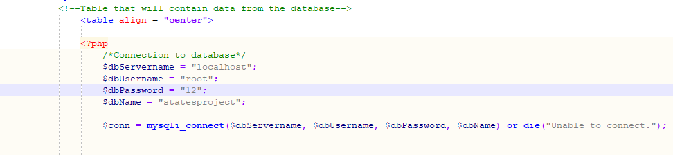
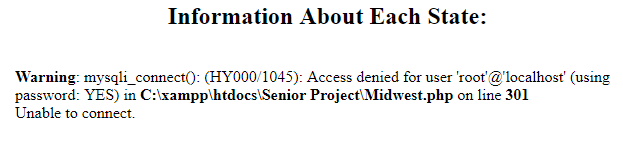

The invalid test data that I had used was to input a false password of the numbers "12" in the field
$dbPassword to try to connect to the database on the webpage named Midwest.php.
This was used to see if the database would produce a message saying that the database could not be reached.
The message worked and the database would not show on the webpage.


The valid data that I had used to test on the website was the data that I had gathered for each of the regions and each of the states in those regions. I had gathered a state picture, state description, state flag, and state flower for each of the 50 states in the U.S. Once I was done gathering the information, I input the data into the database that I had created on phpMyAdmin using MySQL and then tested the data to see if it would output to the appropriate region webpage that was to be displayed. I had also tested region information by gathering regional temperature information along with travel information. This data was much easier to test since all I had to make sure was that the HTML code would input the information that I was typing into my Notepad++ editor.